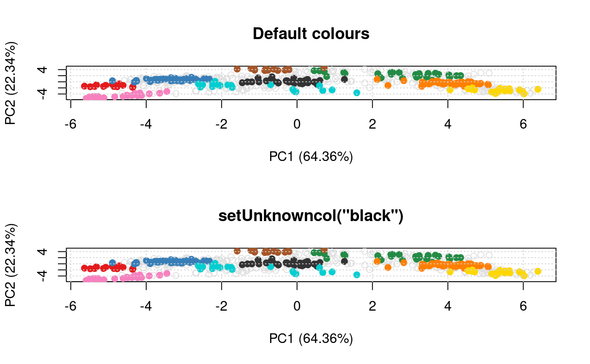

These functions allow to get/set the colours and point character that are used when plotting organelle clusters and unknown features. These values are parametrised at the session level. Two palettes are available: the default palette (previously Lisa's colours) containing 30 colours and the old (original) palette, containing 13 colours.
setLisacol() getLisacol() getOldcol() setOldcol() getStockcol() setStockcol(cols) getStockpch() setStockpch(pchs) getUnknowncol() setUnknowncol(col) getUnknownpch() setUnknownpch(pch)
| cols | A vector of colour |
|---|---|
| pchs | A vector of |
| col | A colour |
| pch | A |
The set functions set (and invisibly returns)
colours. The get functions returns a character
vector of colours. For the pch functions, numerics
rather than characters.
## defaults for clusters getStockcol()#> [1] "#E41A1C" "#377EB8" "#238B45" "#FF7F00" "#FFD700" "#333333" "#00CED1" #> [8] "#A65628" "#F781BF" "#984EA3" "#9ACD32" "#B0C4DE" "#00008A" "#8B795E" #> [15] "#FDAE6B" "#66C2A5" "#276419" "#CD8C95" "#6A51A3" "#EEAD0E" "#0000FF" #> [22] "#9ACD32" "#CD6090" "#CD5B45" "#8E0152" "#808000" "#67000D" "#3F007D" #> [29] "#6BAED6" "#FC9272"getStockpch()#> [1] 19 1 15 0 17 2 18 5 7 9 13 3 4 8## unknown features getUnknownpch()#> [1] 21getUnknowncol()#> [1] "#E0E0E0"## an example library(pRolocdata) data(dunkley2006) par(mfrow = c(2, 1)) plot2D(dunkley2006, fcol = "markers", main = 'Default colours') setUnknowncol("black")#> Error in assign("unknowncol", col, envir = .pRolocEnv): cannot change value of locked binding for 'unknowncol'getUnknowncol()#> [1] "#E0E0E0"setUnknowncol(NULL)#> Error in assign("unknowncol", unknowncol, envir = .pRolocEnv): cannot change value of locked binding for 'unknowncol'getUnknowncol()#> [1] "#E0E0E0"getStockcol()#> [1] "#E41A1C" "#377EB8" "#238B45" "#FF7F00" "#FFD700" "#333333" "#00CED1" #> [8] "#A65628" "#F781BF" "#984EA3" "#9ACD32" "#B0C4DE" "#00008A" "#8B795E" #> [15] "#FDAE6B" "#66C2A5" "#276419" "#CD8C95" "#6A51A3" "#EEAD0E" "#0000FF" #> [22] "#9ACD32" "#CD6090" "#CD5B45" "#8E0152" "#808000" "#67000D" "#3F007D" #> [29] "#6BAED6" "#FC9272"getOldcol()#> [1] "#E41A1C" "#377EB8" "#4DAF4A" "#984EA3" "#FF7F00" "#FFFF33" "#A65628" #> [8] "#F781BF" "#999999" "#333333" "#A021EF" "#008A45" "#00008A"